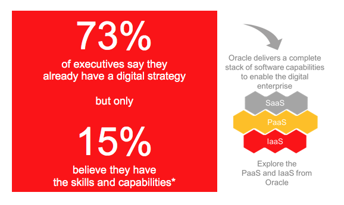

Touch The Cloud
A hands-on event to explore Oracle's new cloud services.
About
Times are changing and things are getting simpler in the Cloud! At Oracle we have invested in delivering a plethora of new Cloud Services and we want to show you how simple – yet powerful they are. We specifically wanted to focus on low code, high productivity services that can be used in building enterprise grade solutions. We believe the best way to do this is to showcase a real world business solution comprised of these services. You will build the entire solution during the course of this workshop all in a stress-free fun environment. By the end of this workshop you would have created a complete “Quote to Order” solution. This solution will comprise of a mobile application, a process automation workflow, integration with an ERP and creating dashboards for visibility and business KPIs. No expertise or experience required We will have experienced instructors guide you through the tool’s online screens and explain how each service works. There is no expertise required from your side, just bring a laptop with a modern web browser and your mobile phone.Objective
Cloud is here to stay but your IT’s center of gravity is your choice. Our goal is to show you how you can mix and match on-premise technologies with tools born in the cloud to achieve a hybrid IT that delivers the best from both worlds.Summary
This event is designed to help everyone understand what PaaS is and what Oracle’s Cloud Services offer to both business and IT. It is designed to ensure that your organization has the knowledge and understanding of which modern tools you can use to compete: either disrupt to outperform or rapidly adjust to disruption from competition. We invite you to come and join us to “Touch the Cloud”!

Who delivers the workshop?
Facilitation of the event is provided by Oracle Platform specialists. Each specialist has several years of experience in working in real-life projects as well as in training and educating a wide audience of technical and non-technical individuals.Our Commitment
Oracle is working with a large number of customers in all kinds of organizations and industries to enable the hybrid IT. We can help you address the big picture, evaluate how you compare with your peers and design for the future. During this event, we will showcase modern services that you can add to your arsenal of business and IT tools needed to compete and excel in today’s aggressive business environments. We commit to making sure that you leave this event with a better grasp of Oracle’s Cloud Services and general Hybrid IT paradigms.| Event | Time |
|---|---|
| Registration | 8:30-8:45 |
| Quote to Order SaaS to On-Premise | 8:45-9:00 |
| Custom Quote Capture MAX-MCS | 9:00-10:30 |
| Break | 10:30-11:00 |
| Approval Process Orchestration PCS | 11:00-12:30 |
| Lunch | 12:30-13:00 |
| Integrate with On-Premise ERP ICS | 13:00-14:30 |
| End to End Visibility and Analytics | 14:30-15:30 |
| Close & Summary | 15:30-16:00 |
What to bring
A laptop with a web browser and your mobile phone. That’s it!Cloud Services covered in this event are:
- Mobile Cloud Service
- Mobile Accelerator
- Process Cloud Service
- Integration Cloud Service
Who is this for?
This event is for everyone: Business, Application Owners, Architects, IT and Developers. No expertise or experience required.Open the navigation menu using the hamburger icon (